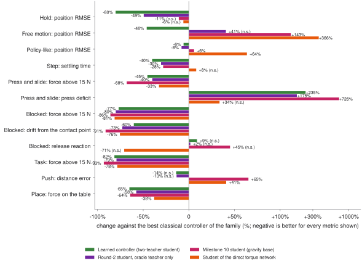
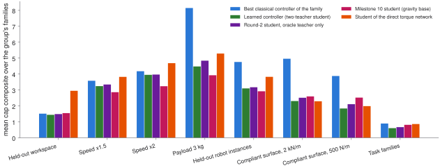
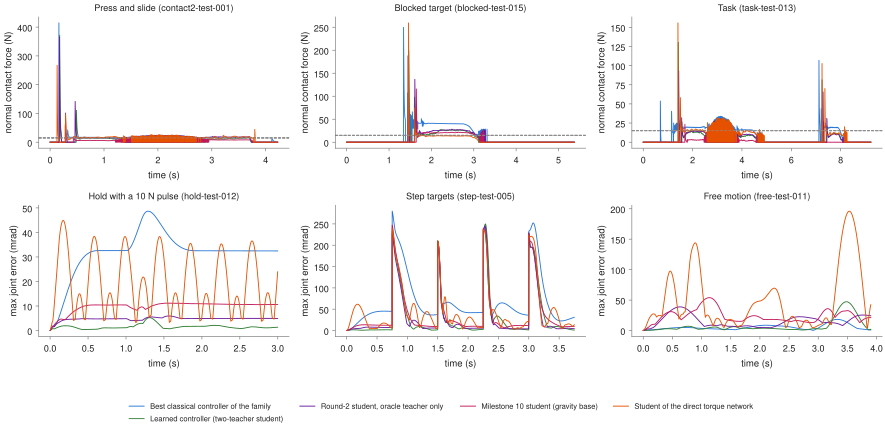

Verdict (revised after round 2, report 17). One learned controller, a residual-plus-gain-multiplier network on a 1 kHz PD base that carries the nominal inverse-dynamics feedforward of the reference, with proprioception and the external-torque estimate as inputs, trained by backpropagation through the plant on the free-space families and then distilled from two privileged teachers (the ideal-robot torque in free space, the contact-impedance oracle in contact) with its free space protected, is competitive or better than the best classical controller of each family on 28 of the 33 family-and-group rows of protocol v3 on the Panda with a Robotiq 2F-85. It tracks free motion at 2.6 mrad against 4.9 for the feedforward PD (the first-round controller, without the model term, was at 11.9), hold at 1.6 against 8.1 mrad, and keeps that advantage in every held-out group (5.0 against 20.6 mrad with a 3 kg payload); it wins the three contact families by 13 to 52% (stopping and waiting at a blocked surface with 5 N above the 15 N cap where the best classical pushes 23 N, pressing inside the 7 to 12 N band where the first-round controller pressed below it), every held-out group's contact families, and keeps a 5 ms compute latency within 5%. The five misses are all the policy-like family (20 Hz held targets), at 5 to 6% above the best classical in every group, with a lower tracking error and a higher torque rate. Push success is 52% against 31% for every classical controller, place success 100% for all with placement at 5 N against 14 N. The pre-registered criterion of ADR 0010 is therefore met on every family but the policy-like targets, by a margin at the threshold, and on the task-success half it is met on pushing and tied at the ceiling on placing. The same student distilled from the oracle alone meets 29 rows and misses free motion where the nominal model is accurate (6.9 against 4.9 mrad); a direct torque network as the learned part fails this protocol: its student loses every free-space family and degrades threefold under latency, because a torque held for 10 ms is open-loop for 10 ms.
Every torque-controlled robot runs a low-level feedback loop between the policy's targets and the motors, usually a PD or impedance law at 100 Hz to 1 kHz with hand-tuned gains. The research agenda argues for learning this loop: no single gain set serves every task, phase of a task and robot instance; policies treat the loop as a black box and pay for it in jerky, unstable behaviour; retuning by hand does not scale across robots, tasks and contact modes, and switching gain sets stably is hard in dynamic tasks; and such a controller, learned from proprioception in simulation, has a small sim-to-real gap. Checkpoint 1 showed the first evidence on a Panda with a spherical tool: a learned residual tracked better than the tuned PD in every family and limited contact forces far better, but did not stop and wait at a blocked surface nor press to a target. Deep dive D6 obtained that behaviour by imitating a privileged oracle, and Milestone 9 moved the plant to the DROID robot (Panda with a Robotiq 2F-85) with a task-level protocol. This checkpoint asks the question the agenda set: is there one learned controller that is competitive or better than the best classical baseline on every family and condition at once?
Plant. MuJoCo, 1 kHz, the Panda with the Robotiq 2F-85 baked closed into one rigid tool body (open to 38 mm for pick-and-place), a table and a wall with the explicit soft contact of ADR 0001, robot instances (mass, inertia, centre-of-mass, damping, armature, friction and actuator-gain deviations), payloads of 0 to 3 kg and sensor noise. The nominal model every controller uses is the datasheet robot.
Classical set. Two shared PD + gravity laws tuned by CMA-ES on the training split, one on the tracking composite and one on the cap composite, and the inverse-dynamics feedforward variant of each; the best of the four per family is the reference of every comparison. A privileged oracle (the contact-impedance law of ADR 0008 around the PD, knowing the surface and the payload) marks the ceiling of the contact families.
Learned controllers. All run at 10 ms decisions on a 1 kHz PD base with proprioception, the commanded-torque history and the external-torque estimate (link-side torque minus the model) as inputs; the round-2 controllers' PD base carries the nominal inverse-dynamics feedforward of the reference, M(q) qdd_ref + C(q, qd_ref) qd_ref + g(q), the same term the feedforward PD of the classical set has (ADR 0010, amendment 2). The residual by actor-critic through the plant (D3 recipe): a torque residual trained by backpropagation through MuJoCo with bounded tracking kernels and a privileged critic. The distilled impedance student: per-joint gain multipliers plus a residual, trained by DAgger to imitate the oracle around that residual, with the free-space families weighted up so that the residual's own behaviour survives where there is no contact. The TAM-style ideal-robot residual (Son et al., CoRL 2026, re-implemented without multi-robot pretraining): a residual trained to make the perturbed robot reproduce the nominal robot's response. The round-2 students (report 17): the residual's base trained on the free-space families only and selected there, the teacher's press floor at the protocol's 7 N, then distilled either from the oracle alone or from two teachers, the TAM-style ideal-robot torque (the torque the sampled plant needs to produce the nominal robot's response under the nominal law, privileged) in free space and the oracle in contact; the first-round student is kept in the tables as the controller they replace. The direct torque network (round 2): the same history input, a torque output instead of a residual, warm-started on the feedforward PD and trained by the same actor-critic, with its own distilled student.
| Family | Reference | Measured | Wanted |
|---|---|---|---|
| Hold | Hold a configuration; a 10 N tool pulse of 0.2 s at 1 s | position RMSE, pulse deflection, torque rate | small error, small deflection, smooth torque |
| Free motion | Minimum-jerk joint paths between random configurations | position RMSE, torque rate | accurate, smooth |
| Policy-like targets | Held targets at 10 to 50 Hz with jitter and jumps | position RMSE, torque rate | track the intent, no chatter |
| Step targets | Joint-space steps | position RMSE, settling time, overshoot | fast settling, no overshoot |
| Press and slide | Approach, press 0.4 to 1.4 cm (7 to 12 N), slide, release, on the table or the wall | force above 15 N, sustained peak, press deficit (below 7 N), contact losses, tool error | press in the band, keep contact, no impact |
| Blocked target | A path through the table or the wall (3 to 8 cm) | force above 15 N, sustained peak, drift from the contact point, fraction moving, release reaction and settling | stop at the surface and wait, resume when the target returns |
| Task (held out) | Reach, press 1 cm, slide 10 cm, lift, transport, press 0.5 cm, lift | force above 15 N, sustained peak, press deficit, contact losses | the press band under a task-like sequence |
| Box pushing | Push a 5 cm box 10 cm with the fingertip faces | success (errors below 2 cm, yaw below 15 degrees), force on the box | move the box where asked, gently |
| Pick-and-place | Carry a held block, place it on the table, release, lift | success (error below 2 cm, upright), block-table force, lift tracking | place gently, track after the payload change |

| Group | Family | Best classical (cap composite) | Learned controller (two-teacher student) | Round-2 student, oracle teacher only | Milestone 10 student (gravity base) | Student of the direct torque network |
|---|---|---|---|---|---|---|
| In-distribution families | Blocked target | PD (cap-tuned) + inverse-dynamics feedforward (10.43) | 5.05 (-52%) | 4.91 (-53%) | 4.15 (-60%) | 4.24 (-59%) |
| In-distribution families | Contact (press, slide) | PD tuned on the cap composite (5.13) | 4.49 (-13%) | 4.49 (-13%) | 3.61 (-30%) | 4.11 (-20%) |
| In-distribution families | Free motion | PD (tracking-tuned) + inverse-dynamics feedforward (0.36) | 0.29 (-19%) | 0.47 (+31%) ✗ | 0.73 (+102%) ✗ | 3.10 (+760%) ✗ |
| In-distribution families | Hold (10 N pulses) | PD tuned on the tracking composite (1.74) | 0.82 (-53%) | 1.26 (-28%) | 1.80 (+3%) | 3.14 (+80%) ✗ |
| In-distribution families | Policy-like targets | PD tuned on the tracking composite (2.34) | 2.47 (+5%) ✗ | 2.28 (-3%) | 2.24 (-4%) | 3.09 (+32%) ✗ |
| In-distribution families | Step targets | PD tuned on the tracking composite (3.30) | 2.61 (-21%) | 2.72 (-18%) | 2.71 (-18%) | 3.67 (+11%) ✗ |
| In-distribution families | Task (held out) | PD (tracking-tuned) + inverse-dynamics feedforward (4.34) | 3.28 (-24%) | 3.20 (-26%) | 3.31 (-24%) | 3.26 (-25%) |
| Held-out workspace (base yaw 1.2 to 2.6 rad) | Free motion | PD (tracking-tuned) + inverse-dynamics feedforward (0.59) | 0.31 (-48%) | 0.49 (-16%) | 0.78 (+32%) ✗ | 3.47 (+488%) ✗ |
| Held-out workspace (base yaw 1.2 to 2.6 rad) | Policy-like targets | PD tuned on the tracking composite (2.43) | 2.58 (+6%) ✗ | 2.48 (+2%) | 2.32 (-5%) | 2.43 (-0%) |
| Speed x1.5 | Contact (press, slide) | PD tuned on the cap composite (6.18) | 5.63 (-9%) | 6.12 (-1%) | 4.17 (-33%) | 5.27 (-15%) |
| Speed x1.5 | Free motion | PD (tracking-tuned) + inverse-dynamics feedforward (0.41) | 0.35 (-13%) | 0.59 (+45%) ✗ | 0.97 (+138%) ✗ | 2.25 (+453%) ✗ |
| Speed x1.5 | Policy-like targets | PD tuned on the tracking composite (2.81) | 2.99 (+6%) ✗ | 2.68 (-5%) | 2.68 (-4%) | 3.61 (+29%) ✗ |
| Speed x1.5 | Task (held out) | PD (tracking-tuned) + inverse-dynamics feedforward (4.93) | 4.00 (-19%) | 3.99 (-19%) | 3.63 (-26%) | 4.17 (-15%) |
| Speed x2 | Contact (press, slide) | PD tuned on the cap composite (6.98) | 6.50 (-7%) | 7.05 (+1%) | 4.68 (-33%) | 5.74 (-18%) |
| Speed x2 | Free motion | PD (tracking-tuned) + inverse-dynamics feedforward (0.56) | 0.51 (-10%) | 0.84 (+49%) ✗ | 1.35 (+142%) ✗ | 3.14 (+462%) ✗ |
| Speed x2 | Policy-like targets | PD tuned on the tracking composite (3.26) | 3.43 (+5%) ✗ | 3.19 (-2%) | 3.08 (-6%) | 3.89 (+19%) ✗ |
| Speed x2 | Task (held out) | PD (tracking-tuned) + inverse-dynamics feedforward (5.91) | 5.37 (-9%) | 4.79 (-19%) | 3.84 (-35%) | 5.95 (+1%) |
| Payload 3 kg | Blocked target | PD (cap-tuned) + inverse-dynamics feedforward (14.98) | 7.66 (-49%) | 8.07 (-46%) | 7.05 (-53%) | 7.25 (-52%) |
| Payload 3 kg | Contact (press, slide) | PD tuned on the cap composite (8.23) | 5.58 (-32%) | 6.08 (-26%) | 4.10 (-50%) | 6.04 (-27%) |
| Payload 3 kg | Free motion | PD (tracking-tuned) + inverse-dynamics feedforward (1.15) | 0.42 (-64%) | 0.73 (-36%) | 1.22 (+7%) ✗ | 3.17 (+177%) ✗ |
| Payload 3 kg | Task (held out) | PD (cap-tuned) + inverse-dynamics feedforward (8.24) | 4.25 (-48%) | 4.48 (-46%) | 3.32 (-60%) | 4.69 (-43%) |
| Held-out robot instances (doubled deviations) | Blocked target | PD (cap-tuned) + inverse-dynamics feedforward (10.75) | 5.05 (-53%) | 5.34 (-50%) | 4.96 (-54%) | 4.68 (-56%) |
| Held-out robot instances (doubled deviations) | Contact (press, slide) | PD tuned on the cap composite (5.35) | 4.41 (-18%) | 4.40 (-18%) | 3.59 (-33%) | 4.58 (-14%) |
| Held-out robot instances (doubled deviations) | Free motion | PD (tracking-tuned) + inverse-dynamics feedforward (0.44) | 0.31 (-30%) | 0.54 (+24%) ✗ | 0.73 (+67%) ✗ | 2.26 (+417%) ✗ |
| Held-out robot instances (doubled deviations) | Policy-like targets | PD tuned on the tracking composite (2.50) | 2.64 (+6%) ✗ | 2.41 (-4%) | 2.40 (-4%) | 3.78 (+51%) ✗ |
| Compliant surface, 2 kN/m (held out) | Blocked target | PD tuned on the cap composite (8.44) | 3.34 (-60%) | 3.89 (-54%) | 3.54 (-58%) | 2.76 (-67%) |
| Compliant surface, 2 kN/m (held out) | Contact (press, slide) | PD (cap-tuned) + inverse-dynamics feedforward (3.14) | 1.90 (-40%) | 2.00 (-36%) | 1.97 (-37%) | 2.23 (-29%) |
| Compliant surface, 2 kN/m (held out) | Task (held out) | PD (cap-tuned) + inverse-dynamics feedforward (3.30) | 1.67 (-49%) | 1.64 (-50%) | 2.27 (-31%) | 1.88 (-43%) |
| Compliant surface, 500 N/m (held out) | Blocked target | PD tuned on the cap composite (6.52) | 2.76 (-58%) | 3.52 (-46%) | 3.46 (-47%) | 2.51 (-61%) |
| Compliant surface, 500 N/m (held out) | Contact (press, slide) | PD (cap-tuned) + inverse-dynamics feedforward (2.41) | 1.44 (-40%) | 1.44 (-40%) | 1.91 (-21%) | 1.76 (-27%) |
| Compliant surface, 500 N/m (held out) | Task (held out) | PD (tracking-tuned) + inverse-dynamics feedforward (2.70) | 1.31 (-52%) | 1.37 (-49%) | 2.20 (-19%) | 1.69 (-37%) |
| Task families (box pushing, pick-and-place) | Pick-and-place | PD (tracking-tuned) + inverse-dynamics feedforward (1.15) | 0.59 (-49%) | 0.73 (-37%) | 0.97 (-16%) | 1.03 (-10%) |
| Task families (box pushing, pick-and-place) | Box pushing | PD tuned on the tracking composite (0.64) | 0.62 (-3%) | 0.61 (-4%) | 0.65 (+3%) | 0.69 (+9%) ✗ |
| All | families and groups | met / total | 28 / 33 | 29 / 33 | 27 / 33 | 20 / 33 |


| Group | Family | Metric | Reference | Significantly better | Significantly worse |
|---|---|---|---|---|---|
| In-distribution families | Hold (10 N pulses) | Position RMSE (rad) | 0.00814 | distill_v3_r2_two_teachers: 0.00161 (-80%); distill_v3_r2_gain_ext: 0.00412 (-49%) | — |
| In-distribution families | Hold (10 N pulses) | Peak deflection under 10 N pulse (m) | 0.00819 | distill_v3_r2_two_teachers: 0.0052 (-37%) | distill_v3_gain_ext: 0.00971 (+19%); distill_v3_r2_torque: 0.0211 (+158%) |
| In-distribution families | Hold (10 N pulses) | Torque rate RMS (Nm/s) | 111 | distill_v3_gain_ext: 109 (-2%) | distill_v3_r2_two_teachers: 136 (+22%); distill_v3_r2_gain_ext: 122 (+10%); distill_v3_r2_torque: 269 (+142%) |
| In-distribution families | Free motion | Position RMSE (rad) | 0.0049 | distill_v3_r2_two_teachers: 0.00264 (-46%) | distill_v3_gain_ext: 0.0119 (+143%); distill_v3_r2_torque: 0.0229 (+366%) |
| In-distribution families | Free motion | Torque rate RMS (Nm/s) | 115 | — | distill_v3_r2_two_teachers: 159 (+39%); distill_v3_r2_gain_ext: 128 (+12%); distill_v3_gain_ext: 129 (+13%); distill_v3_r2_torque: 1.95e+03 (+1602%) |
| In-distribution families | Policy-like targets | Position RMSE (rad) | 0.0431 | distill_v3_r2_two_teachers: 0.0406 (-6%); distill_v3_r2_gain_ext: 0.0397 (-8%) | distill_v3_gain_ext: 0.0456 (+6%); distill_v3_r2_torque: 0.0705 (+64%) |
| In-distribution families | Policy-like targets | Torque rate RMS (Nm/s) | 3.7e+03 | distill_v3_gain_ext: 3.33e+03 (-10%) | distill_v3_r2_two_teachers: 4.14e+03 (+12%) |
| In-distribution families | Step targets | Position RMSE (rad) | 0.0363 | distill_v3_r2_gain_ext: 0.0352 (-3%) | distill_v3_r2_torque: 0.0382 (+5%) |
| In-distribution families | Step targets | Settling time after step (s) | 0.552 | distill_v3_r2_two_teachers: 0.33 (-40%); distill_v3_r2_gain_ext: 0.384 (-30%); distill_v3_gain_ext: 0.396 (-28%) | — |
| In-distribution families | Step targets | Step overshoot (-) | 0.0235 | distill_v3_gain_ext: 0.0139 (-41%) | distill_v3_r2_torque: 0.0849 (+262%) |
| In-distribution families | Contact (press, slide) | Excess contact force above 30 N (mean while in contact) (N) | 2.4 | distill_v3_r2_two_teachers: 1.78 (-26%); distill_v3_r2_gain_ext: 1.8 (-25%); distill_v3_r2_torque: 1.58 (-34%) | — |
| In-distribution families | Contact (press, slide) | Excess contact force above the 15 N cap (mean while in contact) (N) | 9.08 | distill_v3_r2_two_teachers: 4.96 (-45%); distill_v3_r2_gain_ext: 5.44 (-40%); distill_v3_gain_ext: 2.9 (-68%); distill_v3_r2_torque: 6.11 (-33%) | — |
| In-distribution families | Contact (press, slide) | Peak normal force (N) | 270 | distill_v3_r2_two_teachers: 201 (-25%); distill_v3_r2_gain_ext: 210 (-22%); distill_v3_gain_ext: 79.7 (-70%); distill_v3_r2_torque: 170 (-37%) | — |
| In-distribution families | Contact (press, slide) | Peak of the 20 ms low-pass filtered normal force (sustained force) (N) | 93.4 | distill_v3_r2_two_teachers: 73 (-22%); distill_v3_r2_gain_ext: 74.1 (-21%); distill_v3_gain_ext: 27.8 (-70%); distill_v3_r2_torque: 56 (-40%) | — |
| In-distribution families | Contact (press, slide) | Feasible-direction tool error (m) | 0.00842 | — | distill_v3_gain_ext: 0.0118 (+40%) |
| In-distribution families | Contact (press, slide) | Press-phase force deficit below the press floor (5 N under protocol v2, 7 N under v3) (N) | 0.361 | — | distill_v3_r2_two_teachers: 1.21 (+235%); distill_v3_r2_gain_ext: 0.994 (+175%); distill_v3_gain_ext: 2.98 (+726%) |
| In-distribution families | Contact (press, slide) | Contact losses of 5 ms or more during contact phase (-) | 21.8 | — | distill_v3_r2_two_teachers: 43.3 (+99%) |
| In-distribution families | Contact (press, slide) | Contact losses of 5 ms or more per second of press phase (1/s) | 9.74 | — | distill_v3_r2_two_teachers: 17.2 (+76%) |
| In-distribution families | Contact (press, slide) | Contact stiffness: mean normal force per metre of actual tool error along the inward normal while the reference is inside and the tool in contact (after the first 0.3 s of contact) (N/m) | 2.43e+03 | distill_v3_r2_two_teachers: 1.6e+03 (-34%); distill_v3_r2_gain_ext: 1.81e+03 (-25%); distill_v3_gain_ext: 1.1e+03 (-55%); distill_v3_r2_torque: 2.06e+03 (-15%) | — |
| In-distribution families | Blocked target | Excess contact force above 30 N (mean while in contact) (N) | 11.2 | distill_v3_r2_two_teachers: 1.55 (-86%); distill_v3_r2_gain_ext: 1.44 (-87%); distill_v3_gain_ext: 0.679 (-94%); distill_v3_r2_torque: 2.01 (-82%) | — |
| In-distribution families | Blocked target | Excess contact force above the 15 N cap (mean while in contact) (N) | 23 | distill_v3_r2_two_teachers: 5.32 (-77%); distill_v3_r2_gain_ext: 4.59 (-80%); distill_v3_gain_ext: 3.24 (-86%); distill_v3_r2_torque: 4.3 (-81%) | — |
| In-distribution families | Blocked target | Peak normal force (N) | 223 | distill_v3_r2_two_teachers: 198 (-11%); distill_v3_r2_gain_ext: 201 (-10%); distill_v3_gain_ext: 156 (-30%) | — |
| In-distribution families | Blocked target | Peak of the 20 ms low-pass filtered normal force (sustained force) (N) | 71.9 | distill_v3_r2_two_teachers: 64.8 (-10%); distill_v3_r2_gain_ext: 63.6 (-12%); distill_v3_gain_ext: 48.1 (-33%); distill_v3_r2_torque: 58.2 (-19%) | — |
| In-distribution families | Blocked target | Blocked: mean tangential distance of the tool from its first-contact point while the reference is inside the surface (m) | 0.0179 | distill_v3_r2_two_teachers: 0.00709 (-60%); distill_v3_r2_gain_ext: 0.00484 (-73%); distill_v3_gain_ext: 0.00157 (-91%); distill_v3_r2_torque: 0.00437 (-76%) | — |
| In-distribution families | Blocked target | Blocked: fraction of the time in contact with the tool moving faster than 1 cm/s while the reference is inside the surface (-) | 0.336 | distill_v3_r2_two_teachers: 0.168 (-50%); distill_v3_r2_gain_ext: 0.0928 (-72%); distill_v3_gain_ext: 0.068 (-80%); distill_v3_r2_torque: 0.147 (-56%) | — |
| In-distribution families | Blocked target | Apparent stiffness: mean normal force per metre of reference depth while blocked (after the first 0.3 s of contact) (N/m) | 968 | distill_v3_r2_two_teachers: 389 (-60%); distill_v3_r2_gain_ext: 395 (-59%); distill_v3_gain_ext: 379 (-61%); distill_v3_r2_torque: 308 (-68%) | — |
| In-distribution families | Blocked target | Contact stiffness: mean normal force per metre of actual tool error along the inward normal while the reference is inside and the tool in contact (after the first 0.3 s of contact) (N/m) | 984 | distill_v3_r2_two_teachers: 411 (-58%); distill_v3_r2_gain_ext: 406 (-59%); distill_v3_gain_ext: 386 (-61%); distill_v3_r2_torque: 331 (-66%) | — |
| In-distribution families | Blocked target | Recovery after a blocked reference returns (s) | 0 | — | distill_v3_r2_two_teachers: 0.19 (+18997916667%); distill_v3_r2_torque: 0.0746 (+7460416667%) |
| In-distribution families | Blocked target | Feasible-direction tool error (m) | 0.0222 | distill_v3_gain_ext: 0.0128 (-42%); distill_v3_r2_torque: 0.0141 (-37%) | — |
| In-distribution families | Task (held out) | Excess contact force above 30 N (mean while in contact) (N) | 2.51 | distill_v3_r2_two_teachers: 0.483 (-81%); distill_v3_r2_gain_ext: 0.404 (-84%); distill_v3_gain_ext: 0.0795 (-97%); distill_v3_r2_torque: 0.432 (-83%) | — |
| In-distribution families | Task (held out) | Excess contact force above the 15 N cap (mean while in contact) (N) | 10.4 | distill_v3_r2_two_teachers: 1.92 (-82%); distill_v3_r2_gain_ext: 2.16 (-79%); distill_v3_gain_ext: 0.716 (-93%); distill_v3_r2_torque: 2.25 (-78%) | — |
| In-distribution families | Task (held out) | Peak normal force (N) | 107 | distill_v3_r2_gain_ext: 86.9 (-18%); distill_v3_gain_ext: 36 (-66%) | — |
| In-distribution families | Task (held out) | Peak of the 20 ms low-pass filtered normal force (sustained force) (N) | 38.9 | distill_v3_r2_gain_ext: 29.2 (-25%); distill_v3_gain_ext: 12 (-69%); distill_v3_r2_torque: 32.2 (-17%) | — |
| In-distribution families | Task (held out) | Feasible-direction tool error (m) | 0.011 | distill_v3_r2_two_teachers: 0.00719 (-34%) | — |
| In-distribution families | Task (held out) | Press-phase force deficit below the press floor (5 N under protocol v2, 7 N under v3) (N) | 0.04 | — | distill_v3_r2_two_teachers: 1.4 (+3388%); distill_v3_r2_gain_ext: 1.56 (+3787%); distill_v3_gain_ext: 3.71 (+9164%); distill_v3_r2_torque: 0.608 (+1420%) |
| In-distribution families | Task (held out) | Contact losses of 5 ms or more per second of press phase (1/s) | 6.38 | — | distill_v3_r2_two_teachers: 21.7 (+240%); distill_v3_r2_gain_ext: 20.6 (+223%); distill_v3_r2_torque: 20.3 (+218%) |
| Held-out workspace (base yaw 1.2 to 2.6 rad) | Free motion | Position RMSE (rad) | 0.00947 | distill_v3_r2_two_teachers: 0.00293 (-69%) | distill_v3_r2_torque: 0.0347 (+266%) |
| Held-out workspace (base yaw 1.2 to 2.6 rad) | Free motion | Torque rate RMS (Nm/s) | 117 | — | distill_v3_r2_two_teachers: 161 (+38%); distill_v3_r2_gain_ext: 129 (+10%); distill_v3_gain_ext: 125 (+7%); distill_v3_r2_torque: 1.74e+03 (+1388%) |
| Held-out workspace (base yaw 1.2 to 2.6 rad) | Policy-like targets | Position RMSE (rad) | 0.0436 | — | distill_v3_gain_ext: 0.0469 (+8%) |
| Held-out workspace (base yaw 1.2 to 2.6 rad) | Policy-like targets | Torque rate RMS (Nm/s) | 3.9e+03 | distill_v3_r2_gain_ext: 3.75e+03 (-4%); distill_v3_gain_ext: 3.45e+03 (-12%) | distill_v3_r2_two_teachers: 4.32e+03 (+11%) |
| Speed x1.5 | Free motion | Position RMSE (rad) | 0.00571 | distill_v3_r2_two_teachers: 0.00372 (-35%) | distill_v3_r2_gain_ext: 0.00873 (+53%); distill_v3_gain_ext: 0.0159 (+178%); distill_v3_r2_torque: 0.0266 (+365%) |
| Speed x1.5 | Free motion | Torque rate RMS (Nm/s) | 120 | — | distill_v3_r2_two_teachers: 167 (+38%); distill_v3_r2_gain_ext: 152 (+27%); distill_v3_gain_ext: 171 (+42%); distill_v3_r2_torque: 918 (+663%) |
| Speed x1.5 | Policy-like targets | Position RMSE (rad) | 0.0592 | distill_v3_r2_gain_ext: 0.0536 (-9%) | distill_v3_gain_ext: 0.0621 (+5%); distill_v3_r2_torque: 0.0943 (+59%) |
| Speed x1.5 | Policy-like targets | Torque rate RMS (Nm/s) | 4.06e+03 | distill_v3_r2_gain_ext: 4.01e+03 (-1%); distill_v3_gain_ext: 3.6e+03 (-11%) | distill_v3_r2_two_teachers: 4.6e+03 (+13%) |
| Speed x1.5 | Contact (press, slide) | Excess contact force above 30 N (mean while in contact) (N) | 3.98 | distill_v3_gain_ext: 1.59 (-60%); distill_v3_r2_torque: 2.94 (-26%) | — |
| Speed x1.5 | Contact (press, slide) | Excess contact force above the 15 N cap (mean while in contact) (N) | 11.5 | distill_v3_r2_two_teachers: 7.14 (-38%); distill_v3_r2_gain_ext: 8.36 (-27%); distill_v3_gain_ext: 3.5 (-70%); distill_v3_r2_torque: 8.37 (-27%) | — |
| Speed x1.5 | Contact (press, slide) | Peak normal force (N) | 340 | distill_v3_gain_ext: 141 (-58%); distill_v3_r2_torque: 247 (-27%) | — |
| Speed x1.5 | Contact (press, slide) | Peak of the 20 ms low-pass filtered normal force (sustained force) (N) | 114 | distill_v3_r2_two_teachers: 98.3 (-14%); distill_v3_gain_ext: 45.4 (-60%); distill_v3_r2_torque: 76.3 (-33%) | — |
| Speed x1.5 | Contact (press, slide) | Press-phase force deficit below the press floor (5 N under protocol v2, 7 N under v3) (N) | 0.514 | — | distill_v3_gain_ext: 2.61 (+407%) |
| Speed x1.5 | Contact (press, slide) | Contact losses of 5 ms or more during contact phase (-) | 21.1 | — | distill_v3_r2_two_teachers: 43.6 (+107%); distill_v3_r2_torque: 37.1 (+76%) |
| Speed x1.5 | Contact (press, slide) | Contact losses of 5 ms or more per second of press phase (1/s) | 11.3 | — | distill_v3_r2_torque: 17.9 (+58%) |
| Speed x1.5 | Contact (press, slide) | Contact stiffness: mean normal force per metre of actual tool error along the inward normal while the reference is inside and the tool in contact (after the first 0.3 s of contact) (N/m) | 2.93e+03 | distill_v3_r2_two_teachers: 1.9e+03 (-35%); distill_v3_r2_gain_ext: 2.28e+03 (-22%); distill_v3_gain_ext: 1.29e+03 (-56%) | — |
| Speed x1.5 | Task (held out) | Excess contact force above 30 N (mean while in contact) (N) | 3.06 | distill_v3_r2_two_teachers: 1.7 (-44%); distill_v3_r2_gain_ext: 1.35 (-56%); distill_v3_gain_ext: 0.419 (-86%); distill_v3_r2_torque: 1.54 (-50%) | — |
| Speed x1.5 | Task (held out) | Excess contact force above the 15 N cap (mean while in contact) (N) | 10.5 | distill_v3_r2_two_teachers: 3.83 (-64%); distill_v3_r2_gain_ext: 3.59 (-66%); distill_v3_gain_ext: 1.7 (-84%); distill_v3_r2_torque: 3.87 (-63%) | — |
| Speed x1.5 | Task (held out) | Peak normal force (N) | 169 | distill_v3_gain_ext: 54.4 (-68%) | distill_v3_r2_torque: 228 (+35%) |
| Speed x1.5 | Task (held out) | Peak of the 20 ms low-pass filtered normal force (sustained force) (N) | 58.4 | distill_v3_r2_gain_ext: 48.6 (-17%); distill_v3_gain_ext: 15.1 (-74%) | — |
| Speed x1.5 | Task (held out) | Press-phase force deficit below the press floor (5 N under protocol v2, 7 N under v3) (N) | 0 | — | distill_v3_r2_two_teachers: 1.76 (+175778579199%); distill_v3_r2_gain_ext: 1.44 (+143808177896%); distill_v3_gain_ext: 4.06 (+405768096087%); distill_v3_r2_torque: 0.216 (+21642375839%) |
| Speed x1.5 | Task (held out) | Contact losses of 5 ms or more per second of press phase (1/s) | 11.5 | — | distill_v3_r2_gain_ext: 23.1 (+101%) |
| Speed x2 | Free motion | Position RMSE (rad) | 0.00828 | — | distill_v3_r2_gain_ext: 0.0123 (+48%); distill_v3_gain_ext: 0.0218 (+163%); distill_v3_r2_torque: 0.0441 (+433%) |
| Speed x2 | Free motion | Torque rate RMS (Nm/s) | 145 | — | distill_v3_r2_two_teachers: 193 (+33%); distill_v3_r2_gain_ext: 222 (+53%); distill_v3_gain_ext: 262 (+81%); distill_v3_r2_torque: 935 (+545%) |
| Speed x2 | Policy-like targets | Position RMSE (rad) | 0.0789 | distill_v3_r2_two_teachers: 0.0755 (-4%) | — |
| Speed x2 | Policy-like targets | Torque rate RMS (Nm/s) | 4.2e+03 | distill_v3_r2_gain_ext: 4.11e+03 (-2%); distill_v3_gain_ext: 3.73e+03 (-11%) | distill_v3_r2_two_teachers: 4.79e+03 (+14%) |
| Speed x2 | Contact (press, slide) | Excess contact force above 30 N (mean while in contact) (N) | 5.18 | distill_v3_gain_ext: 2.84 (-45%) | distill_v3_r2_two_teachers: 5.99 (+16%); distill_v3_r2_gain_ext: 6.47 (+25%) |
| Speed x2 | Contact (press, slide) | Excess contact force above the 15 N cap (mean while in contact) (N) | 12.6 | distill_v3_r2_two_teachers: 9.71 (-23%); distill_v3_r2_gain_ext: 10.4 (-17%); distill_v3_gain_ext: 4.96 (-61%); distill_v3_r2_torque: 9.9 (-21%) | — |
| Speed x2 | Contact (press, slide) | Peak normal force (N) | 377 | distill_v3_gain_ext: 189 (-50%); distill_v3_r2_torque: 274 (-27%) | — |
| Speed x2 | Contact (press, slide) | Peak of the 20 ms low-pass filtered normal force (sustained force) (N) | 124 | distill_v3_gain_ext: 59.4 (-52%); distill_v3_r2_torque: 83.5 (-33%) | — |
| Speed x2 | Contact (press, slide) | Press-phase force deficit below the press floor (5 N under protocol v2, 7 N under v3) (N) | 0.52 | — | distill_v3_gain_ext: 2.68 (+416%) |
| Speed x2 | Contact (press, slide) | Contact stiffness: mean normal force per metre of actual tool error along the inward normal while the reference is inside and the tool in contact (after the first 0.3 s of contact) (N/m) | 3.06e+03 | distill_v3_r2_gain_ext: 2.32e+03 (-24%); distill_v3_gain_ext: 1.52e+03 (-50%) | — |
| Speed x2 | Task (held out) | Excess contact force above 30 N (mean while in contact) (N) | 4.5 | distill_v3_r2_gain_ext: 2.81 (-38%); distill_v3_gain_ext: 0.846 (-81%) | — |
| Speed x2 | Task (held out) | Excess contact force above the 15 N cap (mean while in contact) (N) | 11.7 | distill_v3_r2_gain_ext: 5.45 (-54%); distill_v3_gain_ext: 1.52 (-87%); distill_v3_r2_torque: 6.65 (-43%) | — |
| Speed x2 | Task (held out) | Peak normal force (N) | 222 | distill_v3_gain_ext: 83.5 (-62%) | distill_v3_r2_torque: 394 (+78%) |
| Speed x2 | Task (held out) | Peak of the 20 ms low-pass filtered normal force (sustained force) (N) | 69.8 | distill_v3_r2_gain_ext: 57.8 (-17%); distill_v3_gain_ext: 23.1 (-67%) | distill_v3_r2_torque: 109 (+56%) |
| Speed x2 | Task (held out) | Press-phase force deficit below the press floor (5 N under protocol v2, 7 N under v3) (N) | 0.203 | — | distill_v3_r2_two_teachers: 2.99 (+1376%); distill_v3_r2_gain_ext: 2.84 (+1300%); distill_v3_gain_ext: 3.93 (+1840%); distill_v3_r2_torque: 1.22 (+501%) |
| Payload 3 kg | Free motion | Position RMSE (rad) | 0.0206 | distill_v3_r2_two_teachers: 0.00496 (-76%); distill_v3_r2_gain_ext: 0.0121 (-41%) | distill_v3_r2_torque: 0.0443 (+115%) |
| Payload 3 kg | Free motion | Torque rate RMS (Nm/s) | 117 | — | distill_v3_r2_two_teachers: 169 (+44%); distill_v3_r2_gain_ext: 130 (+11%); distill_v3_gain_ext: 143 (+22%); distill_v3_r2_torque: 955 (+718%) |
| Payload 3 kg | Contact (press, slide) | Excess contact force above 30 N (mean while in contact) (N) | 8.27 | distill_v3_r2_two_teachers: 2.72 (-67%); distill_v3_r2_gain_ext: 3.09 (-63%); distill_v3_gain_ext: 1.6 (-81%); distill_v3_r2_torque: 2.96 (-64%) | — |
| Payload 3 kg | Contact (press, slide) | Excess contact force above the 15 N cap (mean while in contact) (N) | 21.8 | distill_v3_r2_two_teachers: 10.9 (-50%); distill_v3_r2_gain_ext: 12.7 (-42%); distill_v3_gain_ext: 6.43 (-70%); distill_v3_r2_torque: 12.9 (-41%) | — |
| Payload 3 kg | Contact (press, slide) | Peak normal force (N) | 426 | distill_v3_r2_two_teachers: 306 (-28%); distill_v3_r2_gain_ext: 340 (-20%); distill_v3_gain_ext: 191 (-55%); distill_v3_r2_torque: 332 (-22%) | — |
| Payload 3 kg | Contact (press, slide) | Peak of the 20 ms low-pass filtered normal force (sustained force) (N) | 135 | distill_v3_r2_two_teachers: 103 (-24%); distill_v3_r2_gain_ext: 111 (-18%); distill_v3_gain_ext: 63.5 (-53%); distill_v3_r2_torque: 99.4 (-27%) | — |
| Payload 3 kg | Contact (press, slide) | Feasible-direction tool error (m) | 0.011 | distill_v3_r2_two_teachers: 0.0075 (-32%) | — |
| Payload 3 kg | Contact (press, slide) | Contact losses of 5 ms or more during contact phase (-) | 0.75 | — | distill_v3_r2_two_teachers: 25.1 (+3244%); distill_v3_r2_gain_ext: 17.2 (+2189%); distill_v3_gain_ext: 27.5 (+3561%); distill_v3_r2_torque: 18.5 (+2361%) |
| Payload 3 kg | Contact (press, slide) | Contact losses of 5 ms or more per second of press phase (1/s) | 0.341 | — | distill_v3_r2_two_teachers: 10.2 (+2889%); distill_v3_r2_gain_ext: 7.45 (+2083%); distill_v3_gain_ext: 11.1 (+3144%); distill_v3_r2_torque: 8.07 (+2263%) |
| Payload 3 kg | Contact (press, slide) | Contact stiffness: mean normal force per metre of actual tool error along the inward normal while the reference is inside and the tool in contact (after the first 0.3 s of contact) (N/m) | 4.79e+03 | distill_v3_r2_two_teachers: 3.01e+03 (-37%); distill_v3_r2_gain_ext: 3.29e+03 (-31%); distill_v3_gain_ext: 2.5e+03 (-48%); distill_v3_r2_torque: 3.44e+03 (-28%) | — |
| Payload 3 kg | Blocked target | Excess contact force above 30 N (mean while in contact) (N) | 28.3 | distill_v3_r2_two_teachers: 4.48 (-84%); distill_v3_r2_gain_ext: 3.93 (-86%); distill_v3_gain_ext: 2.08 (-93%); distill_v3_r2_torque: 1.61 (-94%) | — |
| Payload 3 kg | Blocked target | Excess contact force above the 15 N cap (mean while in contact) (N) | 42.6 | distill_v3_r2_two_teachers: 17.8 (-58%); distill_v3_r2_gain_ext: 17 (-60%); distill_v3_gain_ext: 14.4 (-66%); distill_v3_r2_torque: 12.7 (-70%) | — |
| Payload 3 kg | Blocked target | Peak normal force (N) | 279 | distill_v3_r2_two_teachers: 244 (-13%); distill_v3_r2_gain_ext: 250 (-10%); distill_v3_gain_ext: 240 (-14%) | — |
| Payload 3 kg | Blocked target | Peak of the 20 ms low-pass filtered normal force (sustained force) (N) | 90.1 | distill_v3_r2_two_teachers: 82.1 (-9%); distill_v3_r2_gain_ext: 80.4 (-11%); distill_v3_gain_ext: 67.3 (-25%); distill_v3_r2_torque: 72.1 (-20%) | — |
| Payload 3 kg | Blocked target | Blocked: mean tangential distance of the tool from its first-contact point while the reference is inside the surface (m) | 0.0167 | distill_v3_r2_two_teachers: 0.00376 (-77%); distill_v3_r2_gain_ext: 0.00261 (-84%); distill_v3_gain_ext: 0.00318 (-81%); distill_v3_r2_torque: 0.0017 (-90%) | — |
| Payload 3 kg | Blocked target | Blocked: fraction of the time in contact with the tool moving faster than 1 cm/s while the reference is inside the surface (-) | 0.316 | distill_v3_r2_two_teachers: 0.119 (-62%); distill_v3_r2_gain_ext: 0.0654 (-79%); distill_v3_gain_ext: 0.0681 (-78%); distill_v3_r2_torque: 0.0672 (-79%) | — |
| Payload 3 kg | Blocked target | Apparent stiffness: mean normal force per metre of reference depth while blocked (after the first 0.3 s of contact) (N/m) | 1.73e+03 | distill_v3_r2_two_teachers: 851 (-51%); distill_v3_r2_gain_ext: 857 (-50%); distill_v3_gain_ext: 784 (-55%); distill_v3_r2_torque: 743 (-57%) | — |
| Payload 3 kg | Blocked target | Contact stiffness: mean normal force per metre of actual tool error along the inward normal while the reference is inside and the tool in contact (after the first 0.3 s of contact) (N/m) | 1.72e+03 | distill_v3_r2_two_teachers: 864 (-50%); distill_v3_r2_gain_ext: 861 (-50%); distill_v3_gain_ext: 787 (-54%); distill_v3_r2_torque: 748 (-57%) | — |
| Payload 3 kg | Blocked target | Recovery after a blocked reference returns (s) | 0 | — | distill_v3_r2_two_teachers: 0.175 (+17512500000%); distill_v3_r2_gain_ext: 0.214 (+21383333333%); distill_v3_gain_ext: 0.125 (+12462500000%); distill_v3_r2_torque: 0.158 (+15845833333%) |
| Payload 3 kg | Blocked target | Feasible-direction tool error (m) | 0.0434 | distill_v3_r2_two_teachers: 0.0113 (-74%); distill_v3_r2_gain_ext: 0.0138 (-68%); distill_v3_gain_ext: 0.0115 (-73%); distill_v3_r2_torque: 0.0163 (-62%) | — |
| Payload 3 kg | Task (held out) | Excess contact force above 30 N (mean while in contact) (N) | 7.38 | distill_v3_r2_two_teachers: 1.63 (-78%); distill_v3_r2_gain_ext: 1.57 (-79%); distill_v3_gain_ext: 0.87 (-88%); distill_v3_r2_torque: 1.46 (-80%) | — |
| Payload 3 kg | Task (held out) | Excess contact force above the 15 N cap (mean while in contact) (N) | 18.3 | distill_v3_r2_two_teachers: 7.54 (-59%); distill_v3_r2_gain_ext: 9.46 (-48%); distill_v3_gain_ext: 4.57 (-75%); distill_v3_r2_torque: 8.73 (-52%) | — |
| Payload 3 kg | Task (held out) | Peak normal force (N) | 348 | distill_v3_r2_two_teachers: 187 (-46%); distill_v3_r2_gain_ext: 139 (-60%); distill_v3_gain_ext: 126 (-64%); distill_v3_r2_torque: 154 (-56%) | — |
| Payload 3 kg | Task (held out) | Peak of the 20 ms low-pass filtered normal force (sustained force) (N) | 103 | distill_v3_r2_two_teachers: 65.3 (-36%); distill_v3_r2_gain_ext: 48 (-53%); distill_v3_gain_ext: 39.4 (-62%); distill_v3_r2_torque: 44.8 (-56%) | — |
| Payload 3 kg | Task (held out) | Feasible-direction tool error (m) | 0.0247 | distill_v3_r2_two_teachers: 0.00845 (-66%); distill_v3_r2_gain_ext: 0.0119 (-52%); distill_v3_gain_ext: 0.00928 (-62%); distill_v3_r2_torque: 0.0131 (-47%) | — |
| Payload 3 kg | Task (held out) | Contact losses of 5 ms or more per second of press phase (1/s) | 0 | — | distill_v3_r2_two_teachers: 10.5 (+1053001429960%); distill_v3_r2_gain_ext: 7.43 (+743388173853%); distill_v3_gain_ext: 12.5 (+1249605424269%); distill_v3_r2_torque: 11.4 (+1142122531823%) |
| Held-out robot instances (doubled deviations) | Free motion | Position RMSE (rad) | 0.00645 | distill_v3_r2_two_teachers: 0.00296 (-54%) | distill_v3_gain_ext: 0.012 (+85%); distill_v3_r2_torque: 0.017 (+163%) |
| Held-out robot instances (doubled deviations) | Free motion | Torque rate RMS (Nm/s) | 114 | — | distill_v3_r2_two_teachers: 157 (+38%); distill_v3_r2_gain_ext: 127 (+12%); distill_v3_gain_ext: 130 (+15%); distill_v3_r2_torque: 1.41e+03 (+1137%) |
| Held-out robot instances (doubled deviations) | Policy-like targets | Position RMSE (rad) | 0.0472 | distill_v3_r2_two_teachers: 0.0453 (-4%); distill_v3_r2_gain_ext: 0.0428 (-9%) | distill_v3_gain_ext: 0.0509 (+8%); distill_v3_r2_torque: 0.0874 (+85%) |
| Held-out robot instances (doubled deviations) | Policy-like targets | Torque rate RMS (Nm/s) | 3.89e+03 | distill_v3_gain_ext: 3.46e+03 (-11%) | distill_v3_r2_two_teachers: 4.34e+03 (+12%) |
| Held-out robot instances (doubled deviations) | Contact (press, slide) | Excess contact force above 30 N (mean while in contact) (N) | 2.71 | distill_v3_r2_two_teachers: 1.53 (-44%); distill_v3_r2_gain_ext: 1.7 (-37%); distill_v3_gain_ext: 0.55 (-80%); distill_v3_r2_torque: 1.36 (-50%) | — |
| Held-out robot instances (doubled deviations) | Contact (press, slide) | Excess contact force above the 15 N cap (mean while in contact) (N) | 10.4 | distill_v3_r2_two_teachers: 5.02 (-52%); distill_v3_r2_gain_ext: 5.9 (-43%); distill_v3_gain_ext: 2.29 (-78%); distill_v3_r2_torque: 6.9 (-34%) | — |
| Held-out robot instances (doubled deviations) | Contact (press, slide) | Peak normal force (N) | 278 | distill_v3_r2_two_teachers: 200 (-28%); distill_v3_r2_gain_ext: 218 (-22%); distill_v3_gain_ext: 77.3 (-72%); distill_v3_r2_torque: 166 (-40%) | — |
| Held-out robot instances (doubled deviations) | Contact (press, slide) | Peak of the 20 ms low-pass filtered normal force (sustained force) (N) | 93.4 | distill_v3_r2_two_teachers: 70.3 (-25%); distill_v3_r2_gain_ext: 74.5 (-20%); distill_v3_gain_ext: 26.5 (-72%); distill_v3_r2_torque: 55.3 (-41%) | — |
| Held-out robot instances (doubled deviations) | Contact (press, slide) | Press-phase force deficit below the press floor (5 N under protocol v2, 7 N under v3) (N) | 0.791 | — | distill_v3_r2_two_teachers: 1.67 (+112%); distill_v3_gain_ext: 2.84 (+259%) |
| Held-out robot instances (doubled deviations) | Contact (press, slide) | Contact stiffness: mean normal force per metre of actual tool error along the inward normal while the reference is inside and the tool in contact (after the first 0.3 s of contact) (N/m) | 2.83e+03 | distill_v3_r2_two_teachers: 1.74e+03 (-38%); distill_v3_r2_gain_ext: 2.24e+03 (-21%); distill_v3_gain_ext: 1.64e+03 (-42%) | — |
| Held-out robot instances (doubled deviations) | Blocked target | Excess contact force above 30 N (mean while in contact) (N) | 12.5 | distill_v3_r2_two_teachers: 1.49 (-88%); distill_v3_r2_gain_ext: 1.37 (-89%); distill_v3_gain_ext: 0.676 (-95%); distill_v3_r2_torque: 1.24 (-90%) | — |
| Held-out robot instances (doubled deviations) | Blocked target | Excess contact force above the 15 N cap (mean while in contact) (N) | 23.9 | distill_v3_r2_two_teachers: 6.69 (-72%); distill_v3_r2_gain_ext: 6.34 (-73%); distill_v3_gain_ext: 5.53 (-77%); distill_v3_r2_torque: 4.33 (-82%) | — |
| Held-out robot instances (doubled deviations) | Blocked target | Peak normal force (N) | 217 | distill_v3_r2_two_teachers: 187 (-14%); distill_v3_r2_gain_ext: 193 (-11%); distill_v3_gain_ext: 150 (-31%) | — |
| Held-out robot instances (doubled deviations) | Blocked target | Peak of the 20 ms low-pass filtered normal force (sustained force) (N) | 70.6 | distill_v3_r2_two_teachers: 61.8 (-12%); distill_v3_r2_gain_ext: 62.2 (-12%); distill_v3_gain_ext: 47.3 (-33%); distill_v3_r2_torque: 57.7 (-18%) | — |
| Held-out robot instances (doubled deviations) | Blocked target | Blocked: mean tangential distance of the tool from its first-contact point while the reference is inside the surface (m) | 0.0167 | distill_v3_r2_two_teachers: 0.00543 (-67%); distill_v3_r2_gain_ext: 0.00372 (-78%); distill_v3_gain_ext: 0.00188 (-89%); distill_v3_r2_torque: 0.0041 (-75%) | — |
| Held-out robot instances (doubled deviations) | Blocked target | Blocked: fraction of the time in contact with the tool moving faster than 1 cm/s while the reference is inside the surface (-) | 0.319 | distill_v3_r2_two_teachers: 0.157 (-51%); distill_v3_r2_gain_ext: 0.0915 (-71%); distill_v3_gain_ext: 0.0658 (-79%); distill_v3_r2_torque: 0.153 (-52%) | — |
| Held-out robot instances (doubled deviations) | Blocked target | Apparent stiffness: mean normal force per metre of reference depth while blocked (after the first 0.3 s of contact) (N/m) | 1e+03 | distill_v3_r2_two_teachers: 418 (-58%); distill_v3_r2_gain_ext: 433 (-57%); distill_v3_gain_ext: 432 (-57%); distill_v3_r2_torque: 333 (-67%) | — |
| Held-out robot instances (doubled deviations) | Blocked target | Contact stiffness: mean normal force per metre of actual tool error along the inward normal while the reference is inside and the tool in contact (after the first 0.3 s of contact) (N/m) | 1.02e+03 | distill_v3_r2_two_teachers: 435 (-57%); distill_v3_r2_gain_ext: 441 (-57%); distill_v3_gain_ext: 436 (-57%); distill_v3_r2_torque: 355 (-65%) | — |
| Held-out robot instances (doubled deviations) | Blocked target | Recovery after a blocked reference returns (s) | 0 | — | distill_v3_r2_gain_ext: 0.00633 (+633333333%); distill_v3_r2_torque: 0.035 (+3495833333%) |
| Held-out robot instances (doubled deviations) | Blocked target | Feasible-direction tool error (m) | 0.0242 | distill_v3_r2_gain_ext: 0.0109 (-55%); distill_v3_r2_torque: 0.0151 (-38%) | — |
| Compliant surface, 2 kN/m (held out) | Contact (press, slide) | Excess contact force above 30 N (mean while in contact) (N) | 0.808 | distill_v3_r2_two_teachers: 0.186 (-77%); distill_v3_r2_gain_ext: 0.229 (-72%); distill_v3_gain_ext: 0 (-100%); distill_v3_r2_torque: 0.106 (-87%) | — |
| Compliant surface, 2 kN/m (held out) | Contact (press, slide) | Excess contact force above the 15 N cap (mean while in contact) (N) | 5.65 | distill_v3_r2_two_teachers: 0.892 (-84%); distill_v3_r2_gain_ext: 1.54 (-73%); distill_v3_gain_ext: 0.032 (-99%); distill_v3_r2_torque: 2.99 (-47%) | — |
| Compliant surface, 2 kN/m (held out) | Contact (press, slide) | Peak normal force (N) | 60.1 | distill_v3_r2_two_teachers: 38.6 (-36%); distill_v3_r2_gain_ext: 40.7 (-32%); distill_v3_gain_ext: 12.1 (-80%); distill_v3_r2_torque: 33.1 (-45%) | — |
| Compliant surface, 2 kN/m (held out) | Contact (press, slide) | Peak of the 20 ms low-pass filtered normal force (sustained force) (N) | 48.5 | distill_v3_r2_two_teachers: 28.8 (-41%); distill_v3_r2_gain_ext: 31.3 (-35%); distill_v3_gain_ext: 9.08 (-81%); distill_v3_r2_torque: 26.2 (-46%) | — |
| Compliant surface, 2 kN/m (held out) | Contact (press, slide) | Press-phase force deficit below the press floor (5 N under protocol v2, 7 N under v3) (N) | 0.568 | — | distill_v3_gain_ext: 2.87 (+406%) |
| Compliant surface, 2 kN/m (held out) | Contact (press, slide) | Contact losses of 5 ms or more during contact phase (-) | 4 | — | distill_v3_r2_two_teachers: 11 (+175%) |
| Compliant surface, 2 kN/m (held out) | Contact (press, slide) | Contact stiffness: mean normal force per metre of actual tool error along the inward normal while the reference is inside and the tool in contact (after the first 0.3 s of contact) (N/m) | 2.6e+03 | distill_v3_r2_two_teachers: 1.37e+03 (-47%); distill_v3_r2_gain_ext: 1.86e+03 (-29%); distill_v3_gain_ext: 918 (-65%); distill_v3_r2_torque: 2.22e+03 (-14%) | — |
| Compliant surface, 2 kN/m (held out) | Blocked target | Excess contact force above 30 N (mean while in contact) (N) | 9.3 | distill_v3_r2_two_teachers: 0.358 (-96%); distill_v3_r2_gain_ext: 0.368 (-96%); distill_v3_gain_ext: 0.0801 (-99%); distill_v3_r2_torque: 0.156 (-98%) | — |
| Compliant surface, 2 kN/m (held out) | Blocked target | Excess contact force above the 15 N cap (mean while in contact) (N) | 20.1 | distill_v3_r2_two_teachers: 4.01 (-80%); distill_v3_r2_gain_ext: 3.93 (-80%); distill_v3_gain_ext: 3.49 (-83%); distill_v3_r2_torque: 2.06 (-90%) | — |
| Compliant surface, 2 kN/m (held out) | Blocked target | Peak normal force (N) | 51.1 | distill_v3_r2_two_teachers: 41.9 (-18%); distill_v3_r2_gain_ext: 40.8 (-20%); distill_v3_gain_ext: 29.2 (-43%); distill_v3_r2_torque: 35.2 (-31%) | — |
| Compliant surface, 2 kN/m (held out) | Blocked target | Peak of the 20 ms low-pass filtered normal force (sustained force) (N) | 49.3 | distill_v3_r2_two_teachers: 34.1 (-31%); distill_v3_r2_gain_ext: 34.7 (-30%); distill_v3_gain_ext: 23.9 (-51%); distill_v3_r2_torque: 27.6 (-44%) | — |
| Compliant surface, 2 kN/m (held out) | Blocked target | Blocked: mean tangential distance of the tool from its first-contact point while the reference is inside the surface (m) | 0.018 | distill_v3_r2_two_teachers: 0.00515 (-71%); distill_v3_r2_gain_ext: 0.00557 (-69%); distill_v3_gain_ext: 0.00212 (-88%); distill_v3_r2_torque: 0.0041 (-77%) | — |
| Compliant surface, 2 kN/m (held out) | Blocked target | Blocked: fraction of the time in contact with the tool moving faster than 1 cm/s while the reference is inside the surface (-) | 0.356 | distill_v3_r2_two_teachers: 0.25 (-30%); distill_v3_r2_gain_ext: 0.221 (-38%); distill_v3_gain_ext: 0.149 (-58%) | — |
| Compliant surface, 2 kN/m (held out) | Blocked target | Apparent stiffness: mean normal force per metre of reference depth while blocked (after the first 0.3 s of contact) (N/m) | 923 | distill_v3_r2_two_teachers: 366 (-60%); distill_v3_r2_gain_ext: 398 (-57%); distill_v3_gain_ext: 392 (-58%); distill_v3_r2_torque: 298 (-68%) | — |
| Compliant surface, 2 kN/m (held out) | Blocked target | Contact stiffness: mean normal force per metre of actual tool error along the inward normal while the reference is inside and the tool in contact (after the first 0.3 s of contact) (N/m) | 993 | distill_v3_r2_two_teachers: 393 (-60%); distill_v3_r2_gain_ext: 421 (-58%); distill_v3_gain_ext: 410 (-59%); distill_v3_r2_torque: 317 (-68%) | — |
| Compliant surface, 2 kN/m (held out) | Blocked target | Recovery after a blocked reference returns (s) | 0 | — | distill_v3_r2_two_teachers: 0.148 (+14754166667%); distill_v3_r2_torque: 0.0344 (+3437500000%) |
| Compliant surface, 2 kN/m (held out) | Blocked target | Feasible-direction tool error (m) | 0.02 | distill_v3_r2_gain_ext: 0.00982 (-51%) | — |
| Compliant surface, 2 kN/m (held out) | Task (held out) | Excess contact force above 30 N (mean while in contact) (N) | 0.0869 | distill_v3_r2_two_teachers: 0.0373 (-57%); distill_v3_r2_gain_ext: 0.00251 (-97%); distill_v3_gain_ext: 0 (-100%); distill_v3_r2_torque: 0.00466 (-95%) | — |
| Compliant surface, 2 kN/m (held out) | Task (held out) | Excess contact force above the 15 N cap (mean while in contact) (N) | 4.89 | distill_v3_r2_two_teachers: 0.655 (-87%); distill_v3_r2_gain_ext: 0.898 (-82%); distill_v3_gain_ext: 0.00607 (-100%); distill_v3_r2_torque: 1.28 (-74%) | — |
| Compliant surface, 2 kN/m (held out) | Task (held out) | Peak normal force (N) | 29.9 | distill_v3_r2_gain_ext: 21.8 (-27%); distill_v3_gain_ext: 8.75 (-71%); distill_v3_r2_torque: 23.3 (-22%) | — |
| Compliant surface, 2 kN/m (held out) | Task (held out) | Peak of the 20 ms low-pass filtered normal force (sustained force) (N) | 28.7 | distill_v3_r2_two_teachers: 22.6 (-21%); distill_v3_r2_gain_ext: 18.5 (-35%); distill_v3_gain_ext: 7.29 (-75%); distill_v3_r2_torque: 20.1 (-30%) | — |
| Compliant surface, 2 kN/m (held out) | Task (held out) | Feasible-direction tool error (m) | 0.0158 | distill_v3_r2_two_teachers: 0.00632 (-60%); distill_v3_r2_gain_ext: 0.0067 (-58%); distill_v3_r2_torque: 0.0088 (-44%) | — |
| Compliant surface, 2 kN/m (held out) | Task (held out) | Press-phase force deficit below the press floor (5 N under protocol v2, 7 N under v3) (N) | 0.413 | — | distill_v3_r2_gain_ext: 0.867 (+110%); distill_v3_gain_ext: 3.34 (+707%) |
| Compliant surface, 2 kN/m (held out) | Task (held out) | Contact losses of 5 ms or more per second of press phase (1/s) | 0.606 | — | distill_v3_r2_two_teachers: 4.06 (+570%); distill_v3_r2_gain_ext: 3.8 (+527%); distill_v3_gain_ext: 5.65 (+832%); distill_v3_r2_torque: 2.95 (+386%) |
| Compliant surface, 500 N/m (held out) | Contact (press, slide) | Excess contact force above 30 N (mean while in contact) (N) | 0.14 | distill_v3_r2_two_teachers: 0.00738 (-95%); distill_v3_r2_gain_ext: 0.00514 (-96%); distill_v3_gain_ext: 0 (-100%); distill_v3_r2_torque: 0.00687 (-95%) | — |
| Compliant surface, 500 N/m (held out) | Contact (press, slide) | Excess contact force above the 15 N cap (mean while in contact) (N) | 4.38 | distill_v3_r2_two_teachers: 0.262 (-94%); distill_v3_r2_gain_ext: 0.519 (-88%); distill_v3_gain_ext: 0.00115 (-100%); distill_v3_r2_torque: 1.57 (-64%) | — |
| Compliant surface, 500 N/m (held out) | Contact (press, slide) | Peak normal force (N) | 32.8 | distill_v3_r2_two_teachers: 18.8 (-43%); distill_v3_r2_gain_ext: 20.1 (-39%); distill_v3_gain_ext: 8.65 (-74%); distill_v3_r2_torque: 22.3 (-32%) | — |
| Compliant surface, 500 N/m (held out) | Contact (press, slide) | Peak of the 20 ms low-pass filtered normal force (sustained force) (N) | 27.1 | distill_v3_r2_two_teachers: 15.3 (-44%); distill_v3_r2_gain_ext: 16.3 (-40%); distill_v3_gain_ext: 8.04 (-70%); distill_v3_r2_torque: 20.4 (-25%) | — |
| Compliant surface, 500 N/m (held out) | Contact (press, slide) | Press-phase force deficit below the press floor (5 N under protocol v2, 7 N under v3) (N) | 0.583 | — | distill_v3_r2_two_teachers: 1.9 (+225%); distill_v3_gain_ext: 3.5 (+501%) |
| Compliant surface, 500 N/m (held out) | Contact (press, slide) | Contact losses of 5 ms or more during contact phase (-) | 1.5 | — | distill_v3_r2_two_teachers: 4.46 (+197%) |
| Compliant surface, 500 N/m (held out) | Contact (press, slide) | Contact losses of 5 ms or more per second of press phase (1/s) | 0.62 | — | distill_v3_r2_two_teachers: 1.61 (+159%) |
| Compliant surface, 500 N/m (held out) | Contact (press, slide) | Contact stiffness: mean normal force per metre of actual tool error along the inward normal while the reference is inside and the tool in contact (after the first 0.3 s of contact) (N/m) | 4.21e+03 | distill_v3_r2_two_teachers: 1.35e+03 (-68%); distill_v3_r2_gain_ext: 1.79e+03 (-58%); distill_v3_gain_ext: 881 (-79%); distill_v3_r2_torque: 2.66e+03 (-37%) | — |
| Compliant surface, 500 N/m (held out) | Blocked target | Excess contact force above 30 N (mean while in contact) (N) | 3.35 | distill_v3_r2_two_teachers: 0.0542 (-98%); distill_v3_r2_gain_ext: 0.059 (-98%); distill_v3_gain_ext: 0.000141 (-100%); distill_v3_r2_torque: 0.00165 (-100%) | — |
| Compliant surface, 500 N/m (held out) | Blocked target | Excess contact force above the 15 N cap (mean while in contact) (N) | 12.4 | distill_v3_r2_two_teachers: 3.57 (-71%); distill_v3_r2_gain_ext: 3.71 (-70%); distill_v3_gain_ext: 3.6 (-71%); distill_v3_r2_torque: 1.63 (-87%) | — |
| Compliant surface, 500 N/m (held out) | Blocked target | Peak normal force (N) | 39.6 | distill_v3_r2_two_teachers: 26.7 (-33%); distill_v3_r2_gain_ext: 26.6 (-33%); distill_v3_gain_ext: 20.1 (-49%); distill_v3_r2_torque: 21.7 (-45%) | — |
| Compliant surface, 500 N/m (held out) | Blocked target | Peak of the 20 ms low-pass filtered normal force (sustained force) (N) | 38.8 | distill_v3_r2_two_teachers: 22.7 (-41%); distill_v3_r2_gain_ext: 23.5 (-40%); distill_v3_gain_ext: 19.2 (-51%); distill_v3_r2_torque: 19.4 (-50%) | — |
| Compliant surface, 500 N/m (held out) | Blocked target | Blocked: mean tangential distance of the tool from its first-contact point while the reference is inside the surface (m) | 0.0179 | distill_v3_r2_two_teachers: 0.00596 (-67%); distill_v3_r2_gain_ext: 0.00652 (-64%); distill_v3_gain_ext: 0.00348 (-81%); distill_v3_r2_torque: 0.00501 (-72%) | — |
| Compliant surface, 500 N/m (held out) | Blocked target | Blocked: fraction of the time in contact with the tool moving faster than 1 cm/s while the reference is inside the surface (-) | 0.406 | distill_v3_r2_gain_ext: 0.291 (-28%); distill_v3_gain_ext: 0.2 (-51%) | — |
| Compliant surface, 500 N/m (held out) | Blocked target | Apparent stiffness: mean normal force per metre of reference depth while blocked (after the first 0.3 s of contact) (N/m) | 733 | distill_v3_r2_two_teachers: 380 (-48%); distill_v3_r2_gain_ext: 417 (-43%); distill_v3_gain_ext: 414 (-43%); distill_v3_r2_torque: 317 (-57%) | — |
| Compliant surface, 500 N/m (held out) | Blocked target | Contact stiffness: mean normal force per metre of actual tool error along the inward normal while the reference is inside and the tool in contact (after the first 0.3 s of contact) (N/m) | 923 | distill_v3_r2_two_teachers: 452 (-51%); distill_v3_r2_gain_ext: 498 (-46%); distill_v3_gain_ext: 490 (-47%); distill_v3_r2_torque: 373 (-60%) | — |
| Compliant surface, 500 N/m (held out) | Blocked target | Recovery after a blocked reference returns (s) | 0 | — | distill_v3_r2_two_teachers: 0.103 (+10316666667%); distill_v3_r2_torque: 0.0253 (+2525000000%) |
| Compliant surface, 500 N/m (held out) | Blocked target | Feasible-direction tool error (m) | 0.0194 | distill_v3_r2_two_teachers: 0.00875 (-55%); distill_v3_r2_gain_ext: 0.00854 (-56%); distill_v3_r2_torque: 0.012 (-38%) | — |
| Compliant surface, 500 N/m (held out) | Task (held out) | Excess contact force above 30 N (mean while in contact) (N) | 0.185 | distill_v3_r2_two_teachers: 0 (-100%); distill_v3_r2_gain_ext: 0 (-100%); distill_v3_gain_ext: 0 (-100%); distill_v3_r2_torque: 0.00038 (-100%) | — |
| Compliant surface, 500 N/m (held out) | Task (held out) | Excess contact force above the 15 N cap (mean while in contact) (N) | 5 | distill_v3_r2_two_teachers: 0.205 (-96%); distill_v3_r2_gain_ext: 0.38 (-92%); distill_v3_gain_ext: 0.00363 (-100%); distill_v3_r2_torque: 0.823 (-84%) | — |
| Compliant surface, 500 N/m (held out) | Task (held out) | Peak normal force (N) | 26.8 | distill_v3_r2_two_teachers: 16.8 (-38%); distill_v3_r2_gain_ext: 15.1 (-44%); distill_v3_gain_ext: 7.61 (-72%); distill_v3_r2_torque: 19.9 (-26%) | — |
| Compliant surface, 500 N/m (held out) | Task (held out) | Peak of the 20 ms low-pass filtered normal force (sustained force) (N) | 26.1 | distill_v3_r2_two_teachers: 14.7 (-44%); distill_v3_r2_gain_ext: 13.9 (-47%); distill_v3_gain_ext: 6.98 (-73%); distill_v3_r2_torque: 18.5 (-29%) | — |
| Compliant surface, 500 N/m (held out) | Task (held out) | Feasible-direction tool error (m) | 0.0111 | distill_v3_r2_two_teachers: 0.0061 (-45%); distill_v3_r2_gain_ext: 0.00649 (-42%) | — |
| Compliant surface, 500 N/m (held out) | Task (held out) | Press-phase force deficit below the press floor (5 N under protocol v2, 7 N under v3) (N) | 0 | — | distill_v3_r2_gain_ext: 1.04 (+104354303884%); distill_v3_gain_ext: 3.8 (+380017607230%) |
| Compliant surface, 500 N/m (held out) | Task (held out) | Contact losses of 5 ms or more per second of press phase (1/s) | 0.322 | — | distill_v3_r2_two_teachers: 1.87 (+481%); distill_v3_r2_gain_ext: 1.97 (+510%); distill_v3_gain_ext: 2.55 (+691%); distill_v3_r2_torque: 1.61 (+400%) |
| Task families (box pushing, pick-and-place) | Box pushing | Push: error of the box displacement along the push direction against 10 cm (m) | 0.00338 | — | distill_v3_gain_ext: 0.00558 (+65%); distill_v3_r2_torque: 0.00476 (+41%) |
| Task families (box pushing, pick-and-place) | Box pushing | Push: lateral displacement of the box (m) | 0.0133 | distill_v3_r2_two_teachers: 0.00997 (-25%); distill_v3_r2_gain_ext: 0.00976 (-27%); distill_v3_gain_ext: 0.00883 (-34%); distill_v3_r2_torque: 0.00942 (-29%) | — |
| Task families (box pushing, pick-and-place) | Box pushing | Push: box yaw change (rad) | 0.344 | distill_v3_r2_gain_ext: 0.257 (-25%) | — |
| Task families (box pushing, pick-and-place) | Box pushing | Peak of the 20 ms filtered normal force on the object (N) | 1.73 | — | distill_v3_r2_torque: 2.31 (+33%) |
| Task families (box pushing, pick-and-place) | Box pushing | Torque rate RMS (Nm/s) | 161 | — | distill_v3_r2_two_teachers: 382 (+137%); distill_v3_r2_gain_ext: 372 (+131%); distill_v3_gain_ext: 182 (+13%); distill_v3_r2_torque: 312 (+94%) |
| Task families (box pushing, pick-and-place) | Pick-and-place | Place: horizontal error of the block against the target at the end (m) | 0.00228 | — | distill_v3_gain_ext: 0.0059 (+158%) |
| Task families (box pushing, pick-and-place) | Pick-and-place | Place: peak of the 20 ms filtered block-table force during placing (N) | 14.1 | distill_v3_r2_two_teachers: 4.92 (-65%); distill_v3_r2_gain_ext: 5.98 (-58%); distill_v3_gain_ext: 5.05 (-64%); distill_v3_r2_torque: 8.76 (-38%) | — |
| Task families (box pushing, pick-and-place) | Pick-and-place | Pick: joint tracking RMSE during the lift after the release (rad) | 0.00835 | distill_v3_r2_two_teachers: 0.00426 (-49%); distill_v3_r2_gain_ext: 0.00504 (-40%) | — |
| Task families (box pushing, pick-and-place) | Pick-and-place | Torque rate RMS (Nm/s) | 139 | — | distill_v3_r2_two_teachers: 148 (+7%); distill_v3_r2_gain_ext: 156 (+13%); distill_v3_r2_torque: 383 (+176%) |
| In-distribution families with a 5 ms compute latency (learned controllers) | Hold (10 N pulses) | Position RMSE (rad) | 0.00814 | distill_v3_r2_two_teachers: 0.00163 (-80%); distill_v3_r2_gain_ext: 0.00413 (-49%) | distill_v3_r2_torque: 0.0191 (+135%) |
| In-distribution families with a 5 ms compute latency (learned controllers) | Hold (10 N pulses) | Peak deflection under 10 N pulse (m) | 0.00819 | distill_v3_r2_two_teachers: 0.00528 (-36%) | distill_v3_gain_ext: 0.00973 (+19%); distill_v3_r2_torque: 0.0318 (+288%) |
| In-distribution families with a 5 ms compute latency (learned controllers) | Hold (10 N pulses) | Torque rate RMS (Nm/s) | 111 | — | distill_v3_r2_two_teachers: 136 (+22%); distill_v3_r2_gain_ext: 131 (+18%); distill_v3_gain_ext: 116 (+4%); distill_v3_r2_torque: 6.14e+03 (+5425%) |
| In-distribution families with a 5 ms compute latency (learned controllers) | Free motion | Position RMSE (rad) | 0.0049 | distill_v3_r2_two_teachers: 0.00264 (-46%) | distill_v3_gain_ext: 0.0119 (+143%); distill_v3_r2_torque: 0.0334 (+581%) |
| In-distribution families with a 5 ms compute latency (learned controllers) | Free motion | Torque rate RMS (Nm/s) | 115 | — | distill_v3_r2_two_teachers: 158 (+38%); distill_v3_r2_gain_ext: 135 (+18%); distill_v3_gain_ext: 137 (+20%); distill_v3_r2_torque: 8.09e+03 (+6953%) |
| In-distribution families with a 5 ms compute latency (learned controllers) | Policy-like targets | Position RMSE (rad) | 0.0431 | distill_v3_r2_two_teachers: 0.0406 (-6%); distill_v3_r2_gain_ext: 0.0397 (-8%) | distill_v3_gain_ext: 0.0456 (+6%); distill_v3_r2_torque: 0.0809 (+88%) |
| In-distribution families with a 5 ms compute latency (learned controllers) | Policy-like targets | Torque rate RMS (Nm/s) | 3.7e+03 | — | distill_v3_r2_two_teachers: 4.26e+03 (+15%); distill_v3_r2_gain_ext: 3.87e+03 (+5%); distill_v3_gain_ext: 3.83e+03 (+3%); distill_v3_r2_torque: 7.3e+03 (+97%) |
| In-distribution families with a 5 ms compute latency (learned controllers) | Step targets | Position RMSE (rad) | 0.0363 | distill_v3_r2_gain_ext: 0.0352 (-3%) | distill_v3_r2_torque: 0.0459 (+26%) |
| In-distribution families with a 5 ms compute latency (learned controllers) | Step targets | Settling time after step (s) | 0.552 | distill_v3_r2_two_teachers: 0.329 (-40%); distill_v3_r2_gain_ext: 0.387 (-30%); distill_v3_gain_ext: 0.398 (-28%) | distill_v3_r2_torque: 0.706 (+28%) |
| In-distribution families with a 5 ms compute latency (learned controllers) | Step targets | Step overshoot (-) | 0.0235 | distill_v3_gain_ext: 0.014 (-40%) | distill_v3_r2_torque: 0.129 (+448%) |
| In-distribution families with a 5 ms compute latency (learned controllers) | Contact (press, slide) | Excess contact force above 30 N (mean while in contact) (N) | 2.4 | distill_v3_r2_two_teachers: 1.79 (-25%); distill_v3_r2_gain_ext: 1.84 (-23%) | distill_v3_r2_torque: 13.2 (+452%) |
| In-distribution families with a 5 ms compute latency (learned controllers) | Contact (press, slide) | Excess contact force above the 15 N cap (mean while in contact) (N) | 9.08 | distill_v3_r2_two_teachers: 4.96 (-45%); distill_v3_r2_gain_ext: 5.57 (-39%); distill_v3_gain_ext: 3.35 (-63%) | distill_v3_r2_torque: 23.4 (+158%) |
| In-distribution families with a 5 ms compute latency (learned controllers) | Contact (press, slide) | Peak normal force (N) | 270 | distill_v3_r2_two_teachers: 200 (-26%); distill_v3_r2_gain_ext: 213 (-21%); distill_v3_gain_ext: 86.9 (-68%) | — |
| In-distribution families with a 5 ms compute latency (learned controllers) | Contact (press, slide) | Peak of the 20 ms low-pass filtered normal force (sustained force) (N) | 93.4 | distill_v3_r2_two_teachers: 72.1 (-23%); distill_v3_r2_gain_ext: 75.3 (-19%); distill_v3_gain_ext: 30.8 (-67%); distill_v3_r2_torque: 71.5 (-23%) | — |
| In-distribution families with a 5 ms compute latency (learned controllers) | Contact (press, slide) | Feasible-direction tool error (m) | 0.00842 | — | distill_v3_gain_ext: 0.0118 (+40%); distill_v3_r2_torque: 0.0108 (+29%) |
| In-distribution families with a 5 ms compute latency (learned controllers) | Contact (press, slide) | Press-phase force deficit below the press floor (5 N under protocol v2, 7 N under v3) (N) | 0.361 | — | distill_v3_r2_two_teachers: 1.22 (+237%); distill_v3_r2_gain_ext: 1 (+178%); distill_v3_gain_ext: 2.99 (+729%); distill_v3_r2_torque: 0.575 (+59%) |
| In-distribution families with a 5 ms compute latency (learned controllers) | Contact (press, slide) | Contact losses of 5 ms or more during contact phase (-) | 21.8 | — | distill_v3_r2_two_teachers: 42.1 (+93%) |
| In-distribution families with a 5 ms compute latency (learned controllers) | Contact (press, slide) | Contact losses of 5 ms or more per second of press phase (1/s) | 9.74 | — | distill_v3_r2_two_teachers: 16.7 (+71%) |
| In-distribution families with a 5 ms compute latency (learned controllers) | Contact (press, slide) | Contact stiffness: mean normal force per metre of actual tool error along the inward normal while the reference is inside and the tool in contact (after the first 0.3 s of contact) (N/m) | 2.43e+03 | distill_v3_r2_two_teachers: 1.6e+03 (-34%); distill_v3_r2_gain_ext: 1.81e+03 (-25%); distill_v3_gain_ext: 1.09e+03 (-55%) | distill_v3_r2_torque: 4.38e+03 (+81%) |
| In-distribution families with a 5 ms compute latency (learned controllers) | Blocked target | Excess contact force above 30 N (mean while in contact) (N) | 11.2 | distill_v3_r2_two_teachers: 1.66 (-85%); distill_v3_r2_gain_ext: 1.47 (-87%); distill_v3_gain_ext: 0.744 (-93%) | — |
| In-distribution families with a 5 ms compute latency (learned controllers) | Blocked target | Excess contact force above the 15 N cap (mean while in contact) (N) | 23 | distill_v3_r2_two_teachers: 5.38 (-77%); distill_v3_r2_gain_ext: 4.66 (-80%); distill_v3_gain_ext: 3.38 (-85%) | — |
| In-distribution families with a 5 ms compute latency (learned controllers) | Blocked target | Peak normal force (N) | 223 | distill_v3_r2_two_teachers: 197 (-12%); distill_v3_r2_gain_ext: 201 (-10%); distill_v3_gain_ext: 154 (-31%) | distill_v3_r2_torque: 266 (+19%) |
| In-distribution families with a 5 ms compute latency (learned controllers) | Blocked target | Peak of the 20 ms low-pass filtered normal force (sustained force) (N) | 71.9 | distill_v3_r2_two_teachers: 64.1 (-11%); distill_v3_r2_gain_ext: 64.6 (-10%); distill_v3_gain_ext: 50.3 (-30%) | — |
| In-distribution families with a 5 ms compute latency (learned controllers) | Blocked target | Blocked: mean tangential distance of the tool from its first-contact point while the reference is inside the surface (m) | 0.0179 | distill_v3_r2_two_teachers: 0.00724 (-59%); distill_v3_r2_gain_ext: 0.00479 (-73%); distill_v3_gain_ext: 0.00174 (-90%); distill_v3_r2_torque: 0.0136 (-24%) | — |
| In-distribution families with a 5 ms compute latency (learned controllers) | Blocked target | Blocked: fraction of the time in contact with the tool moving faster than 1 cm/s while the reference is inside the surface (-) | 0.336 | distill_v3_r2_two_teachers: 0.191 (-43%); distill_v3_r2_gain_ext: 0.0976 (-71%); distill_v3_gain_ext: 0.0909 (-73%) | distill_v3_r2_torque: 0.575 (+71%) |
| In-distribution families with a 5 ms compute latency (learned controllers) | Blocked target | Apparent stiffness: mean normal force per metre of reference depth while blocked (after the first 0.3 s of contact) (N/m) | 968 | distill_v3_r2_two_teachers: 386 (-60%); distill_v3_r2_gain_ext: 396 (-59%); distill_v3_gain_ext: 380 (-61%) | — |
| In-distribution families with a 5 ms compute latency (learned controllers) | Blocked target | Contact stiffness: mean normal force per metre of actual tool error along the inward normal while the reference is inside and the tool in contact (after the first 0.3 s of contact) (N/m) | 984 | distill_v3_r2_two_teachers: 410 (-58%); distill_v3_r2_gain_ext: 407 (-59%); distill_v3_gain_ext: 387 (-61%) | — |
| In-distribution families with a 5 ms compute latency (learned controllers) | Blocked target | Recovery after a blocked reference returns (s) | 0 | — | distill_v3_r2_two_teachers: 0.195 (+19489583333%); distill_v3_r2_gain_ext: 0.0673 (+6727083333%); distill_v3_r2_torque: 0.16 (+15987500000%) |
| In-distribution families with a 5 ms compute latency (learned controllers) | Blocked target | Feasible-direction tool error (m) | 0.0222 | distill_v3_gain_ext: 0.0128 (-42%) | — |
| In-distribution families with a 5 ms compute latency (learned controllers) | Task (held out) | Excess contact force above 30 N (mean while in contact) (N) | 2.51 | distill_v3_r2_two_teachers: 0.467 (-81%); distill_v3_r2_gain_ext: 0.398 (-84%); distill_v3_gain_ext: 0.0793 (-97%) | distill_v3_r2_torque: 14 (+457%) |
| In-distribution families with a 5 ms compute latency (learned controllers) | Task (held out) | Excess contact force above the 15 N cap (mean while in contact) (N) | 10.4 | distill_v3_r2_two_teachers: 1.9 (-82%); distill_v3_r2_gain_ext: 2.16 (-79%); distill_v3_gain_ext: 0.713 (-93%) | distill_v3_r2_torque: 23.5 (+126%) |
| In-distribution families with a 5 ms compute latency (learned controllers) | Task (held out) | Peak normal force (N) | 107 | distill_v3_r2_gain_ext: 87.7 (-18%); distill_v3_gain_ext: 35.8 (-66%) | distill_v3_r2_torque: 283 (+165%) |
| In-distribution families with a 5 ms compute latency (learned controllers) | Task (held out) | Peak of the 20 ms low-pass filtered normal force (sustained force) (N) | 38.9 | distill_v3_r2_gain_ext: 29.5 (-24%); distill_v3_gain_ext: 12.1 (-69%) | distill_v3_r2_torque: 80.7 (+107%) |
| In-distribution families with a 5 ms compute latency (learned controllers) | Task (held out) | Feasible-direction tool error (m) | 0.011 | distill_v3_r2_two_teachers: 0.0072 (-34%) | distill_v3_r2_torque: 0.0152 (+38%) |
| In-distribution families with a 5 ms compute latency (learned controllers) | Task (held out) | Press-phase force deficit below the press floor (5 N under protocol v2, 7 N under v3) (N) | 0.04 | — | distill_v3_r2_two_teachers: 1.42 (+3445%); distill_v3_r2_gain_ext: 1.56 (+3801%); distill_v3_gain_ext: 3.71 (+9178%); distill_v3_r2_torque: 0.709 (+1671%) |
| In-distribution families with a 5 ms compute latency (learned controllers) | Task (held out) | Contact losses of 5 ms or more per second of press phase (1/s) | 6.38 | — | distill_v3_r2_two_teachers: 20.9 (+228%); distill_v3_r2_gain_ext: 20 (+214%) |
| Controller | Hold (10 N pulses) (0 / 5 ms) | Free motion (0 / 5 ms) | Policy-like targets (0 / 5 ms) | Step targets (0 / 5 ms) | Contact (press, slide) (0 / 5 ms) | Blocked target (0 / 5 ms) | Task (held out) (0 / 5 ms) | Diverged at 5 ms |
|---|---|---|---|---|---|---|---|---|
| Learned controller (two-teacher student) | 0.82 / 0.83 | 0.29 / 0.29 | 2.47 / 2.52 | 2.61 / 2.74 | 4.49 / 4.45 | 5.05 / 5.08 | 3.28 / 3.21 | 0 |
| Round-2 student, oracle teacher only | 1.26 / 1.27 | 0.47 / 0.48 | 2.28 / 2.34 | 2.72 / 2.81 | 4.49 / 4.54 | 4.91 / 4.96 | 3.20 / 3.18 | 0 |
| Milestone 10 student (gravity base) | 1.80 / 1.81 | 0.73 / 0.73 | 2.24 / 2.44 | 2.71 / 2.80 | 3.61 / 3.76 | 4.15 / 4.32 | 3.31 / 3.27 | 0 |
| Student of the direct torque network | 3.14 / 11.23 | 3.10 / 9.76 | 3.09 / 4.54 | 3.67 / 5.81 | 4.11 / 10.89 | 4.24 / 12.19 | 3.26 / 11.97 | 0 |
| Controller | Hold (10 N pulses) | Free motion | Policy-like targets | Step targets | Contact (press, slide) | Blocked target | Task (held out) | Box pushing | Pick-and-place |
|---|---|---|---|---|---|---|---|---|---|
| Best classical controller of the family | 111 | 115 | 3701 | 1678 | 110 | 195 | 127 | 161 | 139 |
| Learned controller (two-teacher student) | 136 | 159 | 4139 | 1715 | 164 | 236 | 135 | 382 | 148 |
| Round-2 student, oracle teacher only | 122 | 128 | 3719 | 1658 | 149 | 239 | 135 | 372 | 156 |
| Milestone 10 student (gravity base) | 109 | 129 | 3331 | 1578 | 127 | 187 | 126 | 182 | 138 |
| Student of the direct torque network | 269 | 1953 | 4202 | 1753 | 274 | 501 | 317 | 312 | 383 |
One case per family (the median case of the tracking-tuned PD), the two tuned PD variants, the privileged oracle and the distilled student side by side; the contact families also at quarter speed.